`geom_smooth()` using formula = 'y ~ x'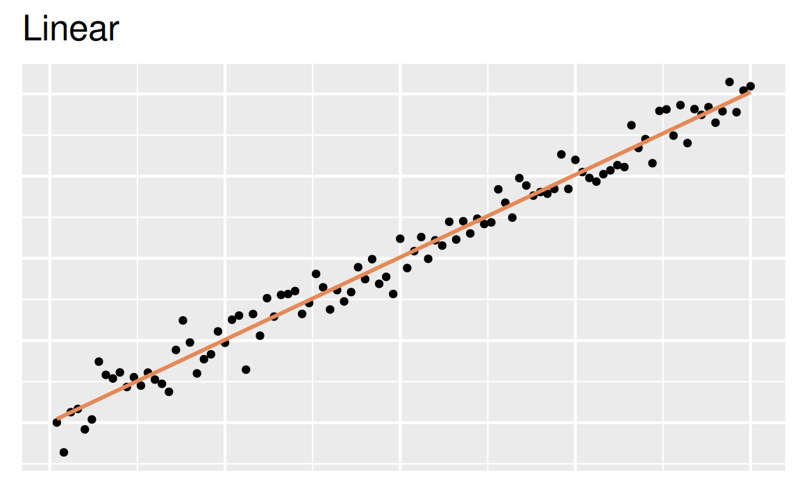
Modeling and inference
`geom_smooth()` using formula = 'y ~ x'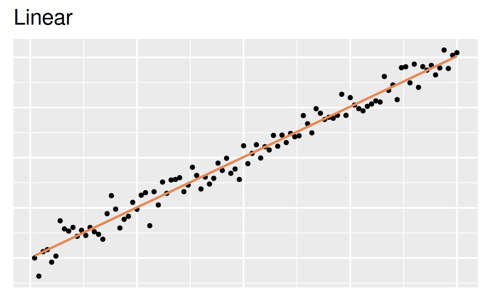
`geom_smooth()` using formula = 'y ~ x'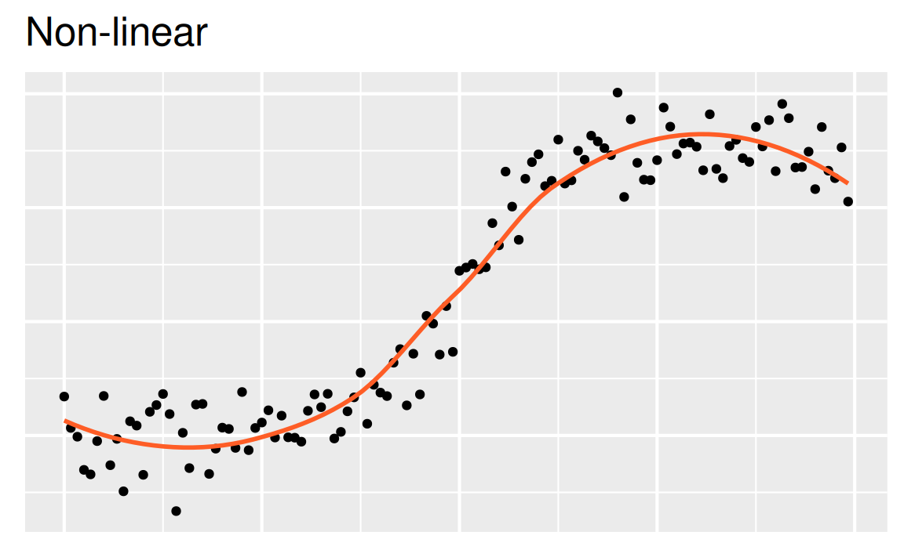
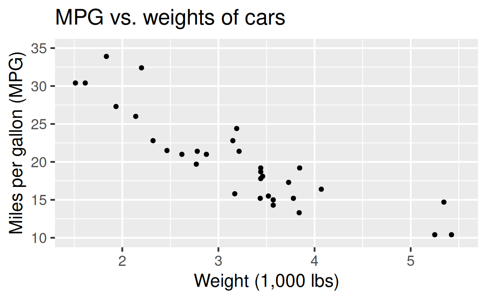
Describe: What is the relationship between cars’ weights and their mileage?

Predict: What is your best guess for a car’s MPG that weighs 3,500 pounds?
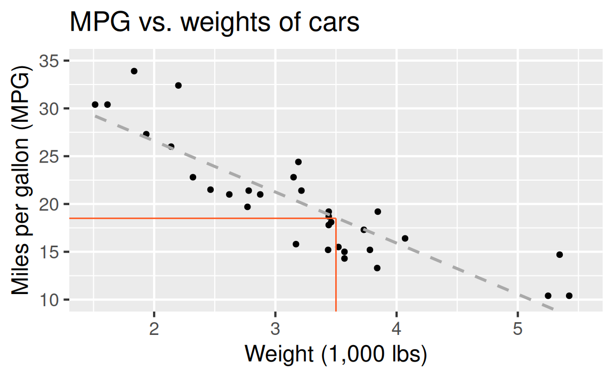
Outcome: Variable whose behavior or variation you are trying to understand, on the y-axis (aka response variable, dependent variable)
Predictor(s): Other variable(s) that you want to use to explain the variation in the outcome, on the x-axis (aka explanatory variable(s), independent variable(s))
Model function: The regression line for predicting the outcome variable from the predictor variable(s), comprised generally of an intercept and a slope for each predictor
Predicted value: Output of the model function, which gives the typical (expected) value of the outcome conditioning on the predictor
Residuals: A measure of how far each case’s observed value is from its predicted value (based on a particular model)
| mpg | wt |
|---|---|
| 21 | 2.62 |
| 21 | 2.875 |
| 22.8 | 2.32 |
| 21.4 | 3.215 |
| 18.7 | 3.44 |
| 18.1 | 3.46 |
| ... | ... |

| mpg | wt |
|---|---|
| 21 | 2.62 |
| 21 | 2.875 |
| 22.8 | 2.32 |
| 21.4 | 3.215 |
| 18.7 | 3.44 |
| 18.1 | 3.46 |
| ... | ... |
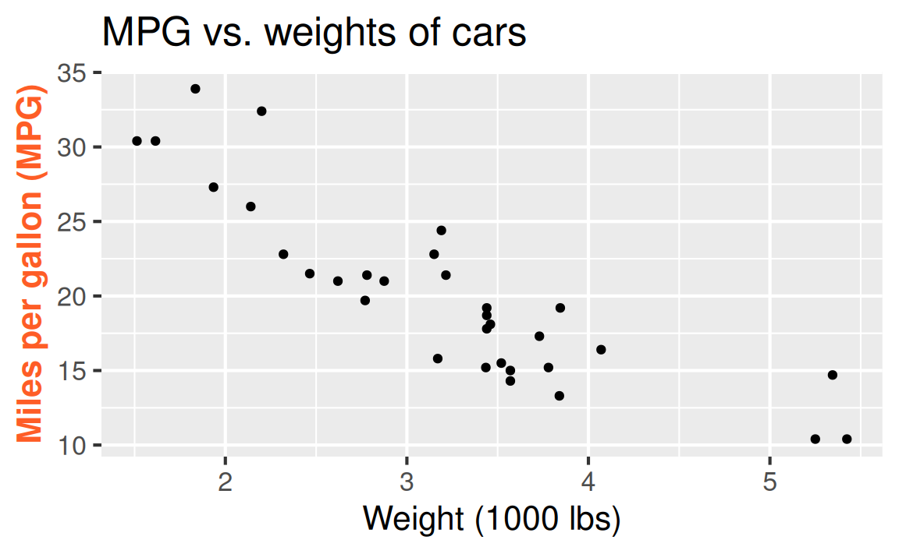
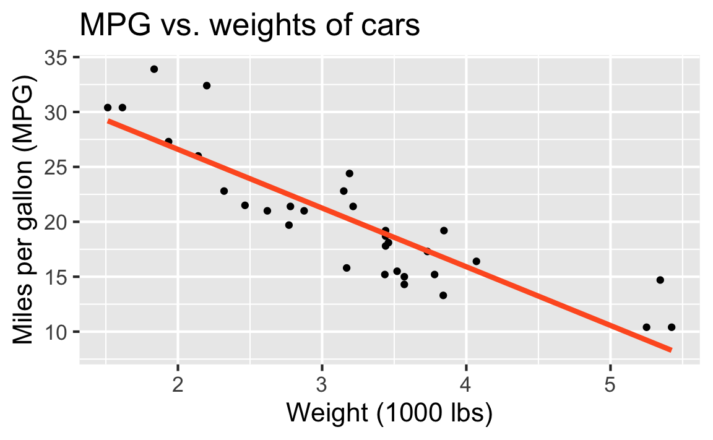
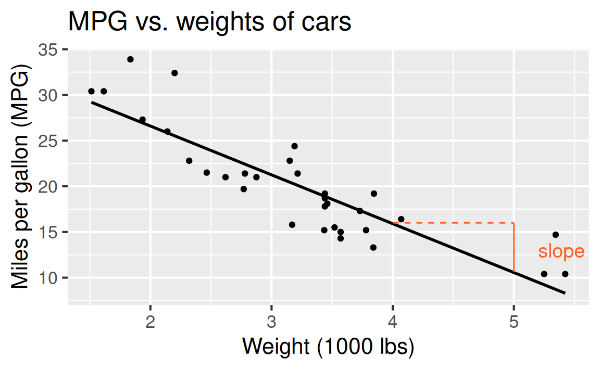
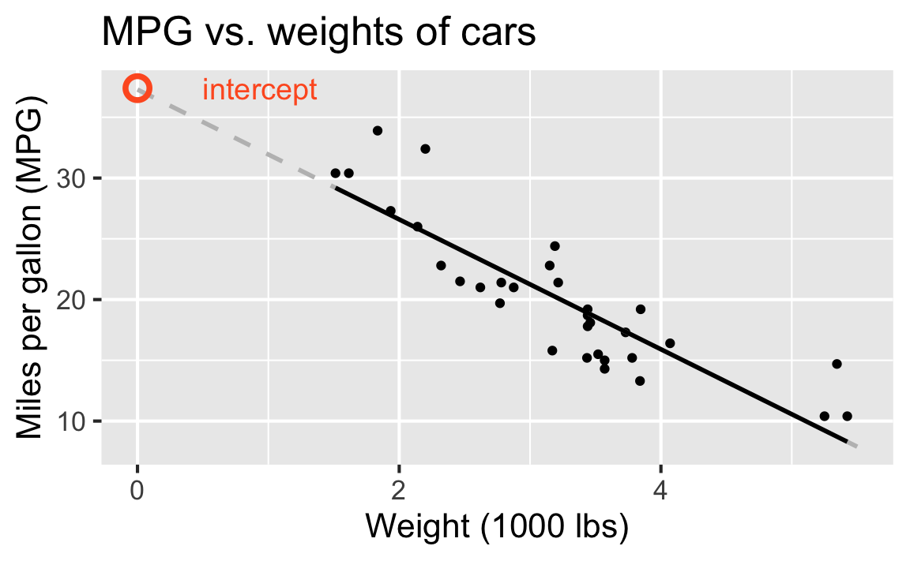
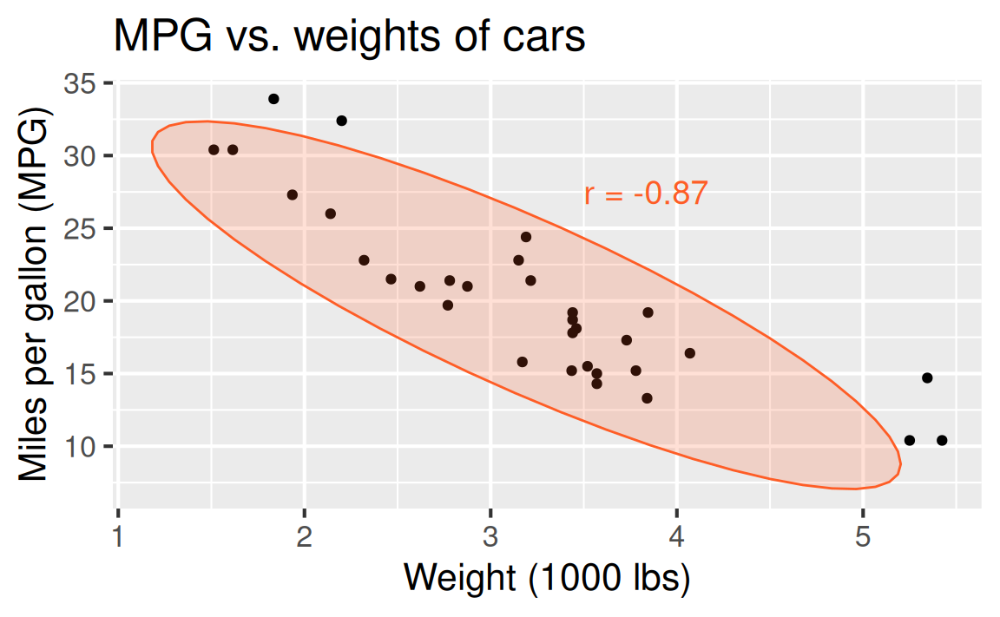

mtcars_fit <- linear_reg() |>
fit(mpg ~ wt, data = mtcars)
mtcars_tidy <- tidy(mtcars_fit)
mtcars_aug <- augment(mtcars_fit, new_data = mtcars) |>
mutate(res_cat = if_else(.resid > 0, TRUE, FALSE))
ggplot(mtcars_aug) +
geom_line(aes(x = wt, y = .pred), linewidth = 0.75, alpha = 0.8) +
geom_point(aes(x = wt, y = mpg, color = res_cat)) +
labs(
x = "Weight (1,000 lbs)",
y = "Miles per gallon (MPG)",
title = "MPG vs. weights of cars"
) +
guides(color = "none") +
scale_color_manual(values = c("#fec926", "#fe265b")) +
annotate("text", x = 2.5, y = 30, label = "Positive residual", color = "#fe265b", hjust = 0, size = 8) +
annotate("text", x = 1, y = 10, label = "Negative residual", color = "#fec926", hjust = 0, size = 8)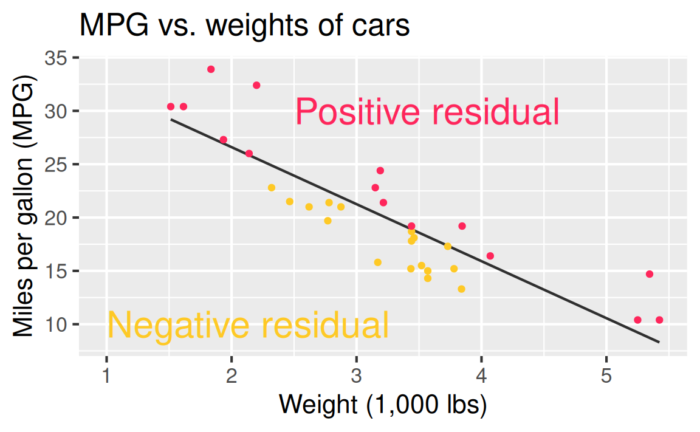
ggplot(
mtcars,
aes(x = wt, y = mpg)
) +
geom_point(alpha = 0.4) +
geom_smooth(method = "lm", se = FALSE, fullrange = TRUE, color = "#fe5d26") +
labs(
x = "Weight (1,000 lbs)",
y = "Miles per gallon (MPG)",
title = "MPG vs. weights of cars"
) +
xlim(-3, 10) + ylim(-10, 50)`geom_smooth()` using formula = 'y ~ x'Warning: Removed 12 rows containing missing values or values outside
the scale range (`geom_smooth()`).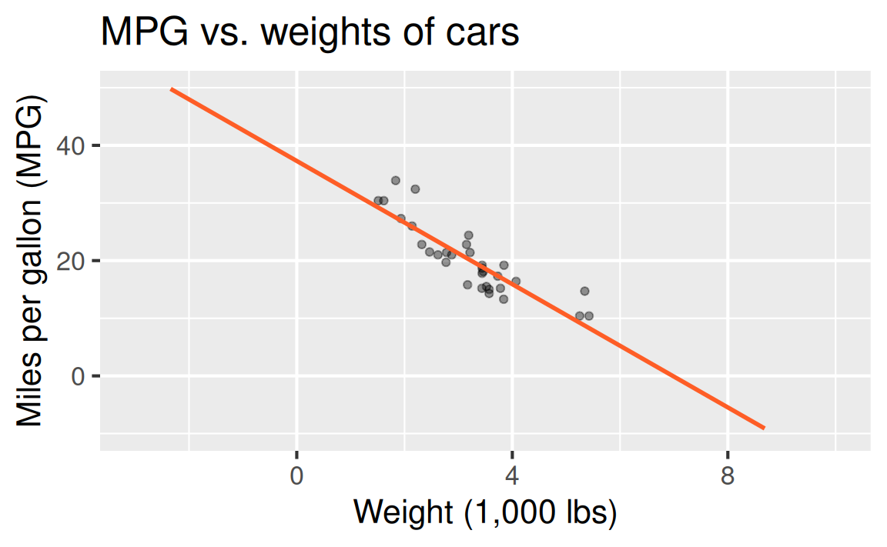
is just as important as the model, if not more!
Statistics is the explanation of variation in the context of what remains unexplained.
Explanation: Quantify the relationship between predictor(s) and outcome with slopes
Prediction: Plug in the value of a predictor to the model to obtain a predicted value of the outcome
i love how Tesla thinks the wall in my garage is a semi. 😅

New owner here. Just parked in my garage. Tesla thinks I crashed onto a semi.

Tesla calls Mercedes trash

Byambasukh, Oyuntugs, Harold Snieder, and Eva Corpeleijn. “Relation between leisure time, commuting, and occupational physical activity with blood pressure in 125 402 adults: the lifelines cohort.” Journal of the American Heart Association 9.4 (2020): e014313.
Background: Whether all domains of daily‐life moderate‐to‐vigorous physical activity (MVPA) are associated with lower blood pressure (BP) and how this association depends on age and body mass index remains unclear.
Methods and Results: In the population‐based Lifelines cohort (N=125,402), MVPA was assessed by the Short Questionnaire to Assess Health‐Enhancing Physical Activity, a validated questionnaire in different domains such as commuting, leisure‐time, and occupational PA. BP was assessed using the last 3 of 10 measurements after 10 minutes’ rest in the supine position. Hypertension was defined as systolic BP ≥140 mm Hg and/or diastolic BP ≥90 mm Hg and/or use of antihypertensives. In regression analysis, higher commuting and leisure‐time but not occupational MVPA related to lower BP and lower hypertension risk. Commuting‐and‐leisure‐time MVPA was associated with BP in a dose‐dependent manner. β Coefficients (95% CI) from linear regression analyses were −1.64 (−2.03 to −1.24), −2.29 (−2.68 to −1.90), and finally −2.90 (−3.29 to −2.50) mm Hg systolic BP for the low, middle, and highest tertile of MVPA compared with “No MVPA” as the reference group after adjusting for age, sex, education, smoking and alcohol use. Further adjustment for body mass index attenuated the associations by 30% to 50%, but more MVPA remained significantly associated with lower BP and lower risk of hypertension. This association was age dependent. β Coefficients (95% CI) for the highest tertiles of commuting‐and‐leisure‐time MVPA were −1.67 (−2.20 to −1.15), −3.39 (−3.94 to −2.82) and −4.64 (−6.15 to −3.14) mm Hg systolic BP in adults <40, 40 to 60, and >60 years, respectively.
Conclusions: Higher commuting and leisure‐time but not occupational MVPA were significantly associated with lower BP and lower hypertension risk at all ages, but these associations were stronger in older adults.